Префектура Вакаяма · Минабэ · еда
Умэбоси из Минабэ: как «Умэ Бойз» вернули кислую сливу на соли
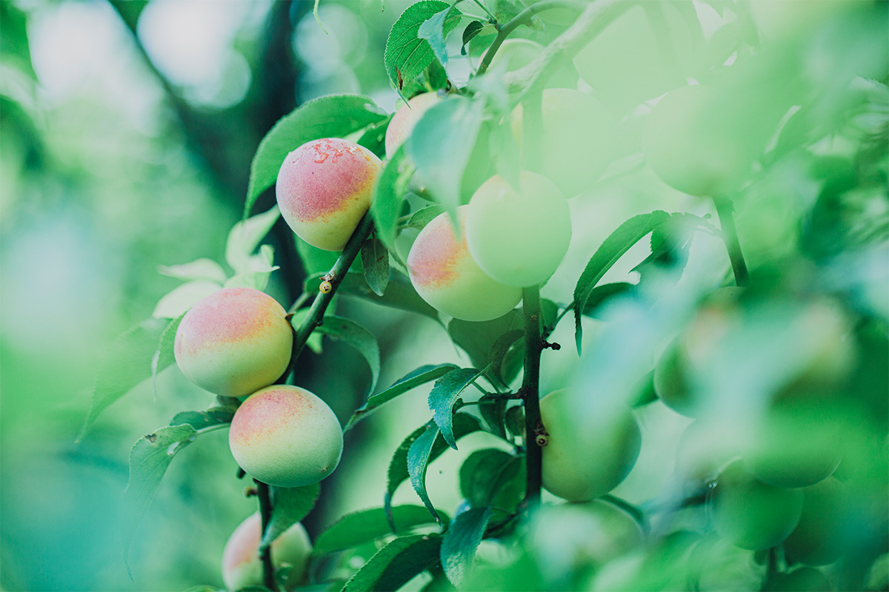
Умэбоси, солёная японская слива, стоит на столе почти в каждом доме, но настоящую, кислую и солёную, купить всё труднее. Небольшая команда из Минабэ решила это исправить и солит сливы так же, как сто лет назад.
Кто они
Команда из сливового края
Минабэ, небольшой город на тихоокеанском побережье префектуры Вакаяма, считается главным краем сливы умэ в Японии. Отсюда родом сорт нанко, и здесь в 1904 году открылось семейное хозяйство Ямамото. Сегодня его ведёт уже пятое поколение.
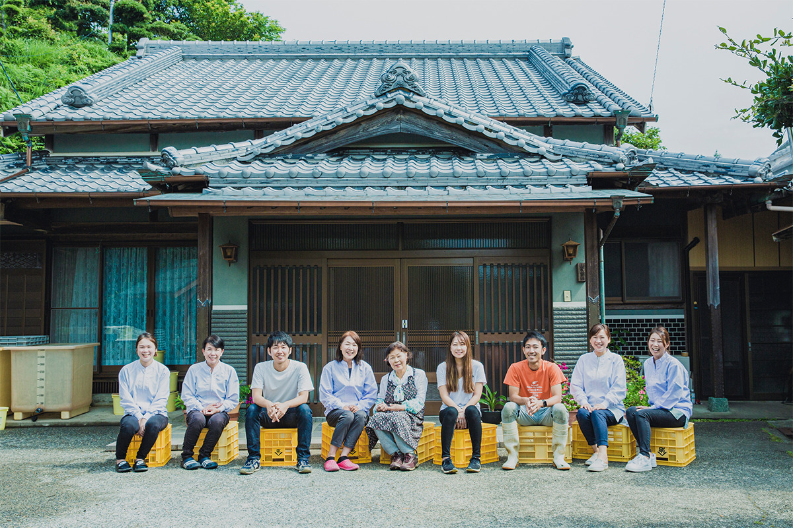
Один из сыновей семьи, Сёсиро Ямамото, собрал команду единомышленников, и вместе они открыли лавку умэбоси «Умэ Бойз» при компании «Умэхикари». Их общая цель: сохранить для следующих поколений сливу как часть японской кухни. Умэбоси здесь делают только из слив нанко, соли и листьев сисо, без каких-либо добавок, и продают через магазины по всей стране и интернет.
Чтобы о сливе узнали люди разного возраста, команда выкладывает в соцсетях рецепты с умэ и снимает видео для YouTube. С марта 2021 года «Умэ Бойз» проводили онлайн-занятия для младших школьников, на которых дети сами солили сливы: так, по замыслу команды, интерес к умэ появляется с детства.
История
Слива, которой гордился бы брат
Сёсиро окончил школу в родном городе и уехал в Саппоро, а семейное дело унаследовал его старший брат. Однажды брат признался ему: «Сливу выращиваешь, а потом её всё равно заливают сладким маринадом, и у всех получается одинаковый вкус. Честно говоря, растить её мне неинтересно».
Эти слова так задели Сёсиро, что он бросил аспирантуру и решил сам сделать умэбоси, которые понравились бы брату. Он перепробовал подряд все умэбоси с хорошей репутацией, записывал данные, понемногу менял пропорции, сырьё и срок выдержки и сравнивал результаты.
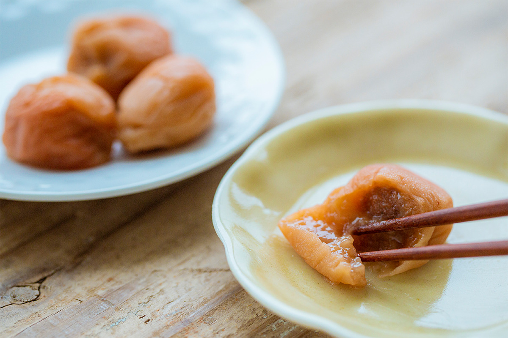
Стоит подумать об умэбоси, и рот наполняется слюной: такой их помнит большинство японцев. Но старомодную кислую сливу в магазине найти всё сложнее. На полках супермаркетов почти одни «тёми-умэбоси», сливы, которые после засолки вымачивают в приправленном маринаде.
Увидев это, команда решила сохранить культуру кислых умэбоси и в августе 2019 года зарегистрировала компанию. Принцип у неё простой: простые продукты должны раскрывать вкус самой сливы. Поэтому никаких добавок, только соль и сисо.
Три правила
Сырьё, выдержка и ручная работа
Умэбоси «Умэ Бойз» сделаны так, как их всегда делали на сливовых фермах. Вкус у них простой, не надоедает, а кислинка будит аппетит.
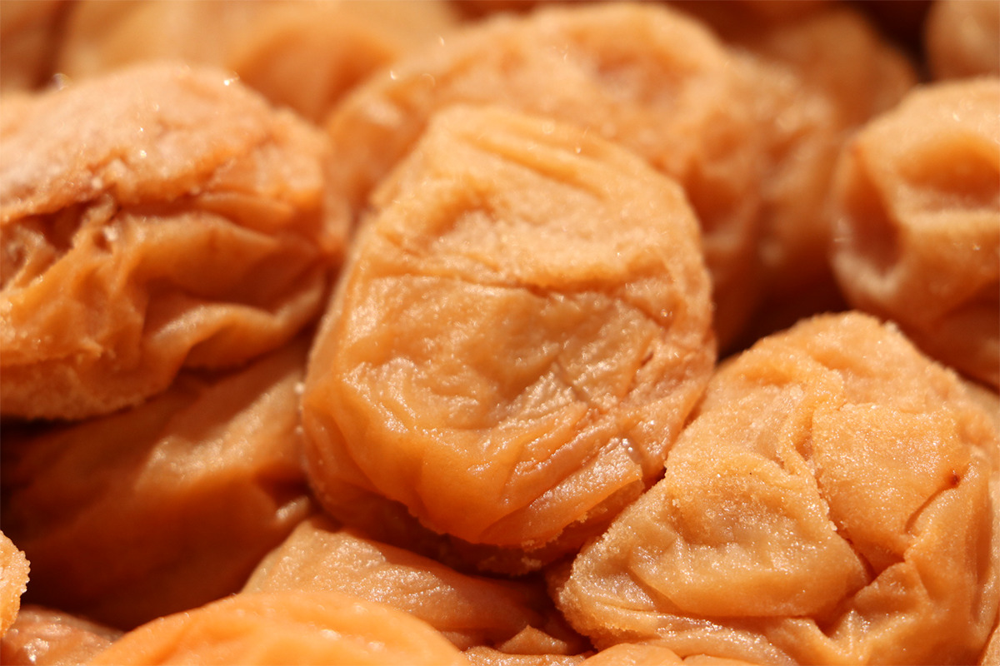
Сырьё. Сливы нанко из Минабэ отличаются крупными мягкими плодами. Соль берут морскую, выпаренную на солнце, богатую минералами. Красное сисо привозят из префектуры Токусима: оно даёт яркий красный цвет и фруктовый аромат. Добавок нет совсем, вкус держится на самом сырье.
Выдержка. Сливы определённое время выдерживают, и за это время раскрывается их вкус: в готовой умэбоси чувствуется сама слива.
Ручная работа. Слива нежная и легко мнётся, поэтому каждую проверяют отдельно. Умэбоси делают вручную, опираясь на опыт, который в семьях сливовых фермеров передавали из поколения в поколение.
Классика
«Умэ то сио»: слива и соль
В этих умэбоси только слива нанко и соль. Они кислые и солёные, как положено. Собирают лишь полностью созревшие плоды, которые сами упали с дерева: у них мягкая кожица и фруктовый аромат. Сливы засаливают в солнечной соли, сушат на солнце и затем выдерживают в темноте. За кислотой в готовой сливе чувствуется лёгкая сладость.
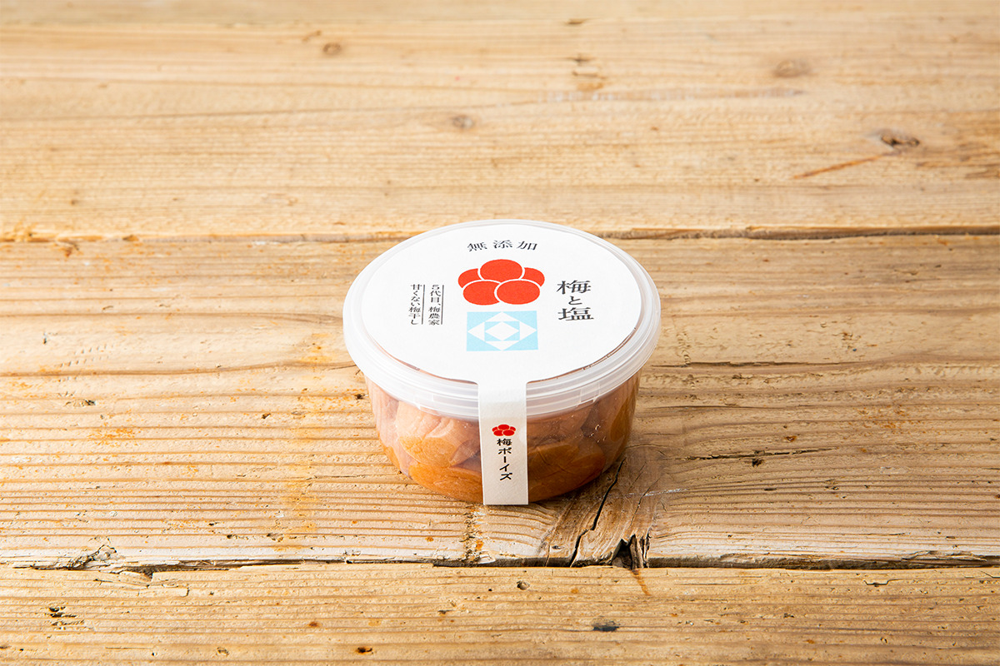
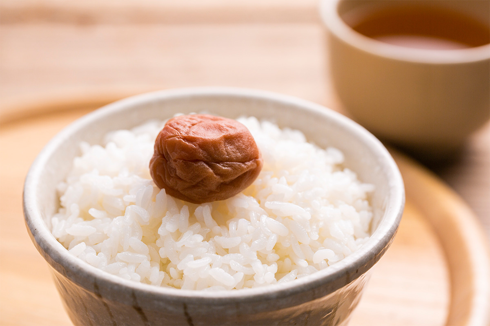
С сисо
«Умэ то сисо»: мягче и ароматнее
Вторые умэбоси засаливают вместе с красным сисо из Токусимы: у этого сорта мелкие листья и сильный аромат. После сушки на солнце сливы выдерживают, и вкус становится мягче, а аромат сисо остаётся. Соли в них меньше, около 15%.
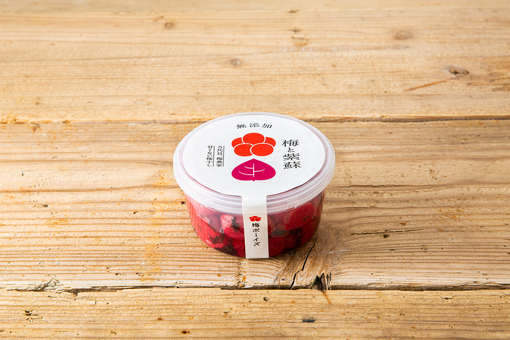
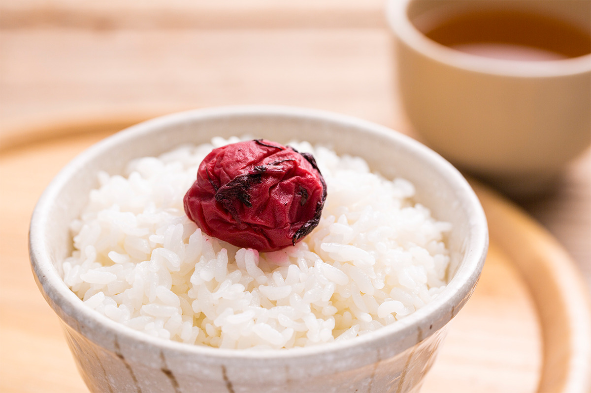
Отдельно продают «Кирэ», сливы, у которых при засолке с сисо лопнула кожица: килограмм стоил 3280 иен с налогом в 2021 году.
Сравнение
«Умэкурабэ»: шесть ферм в одной коробке
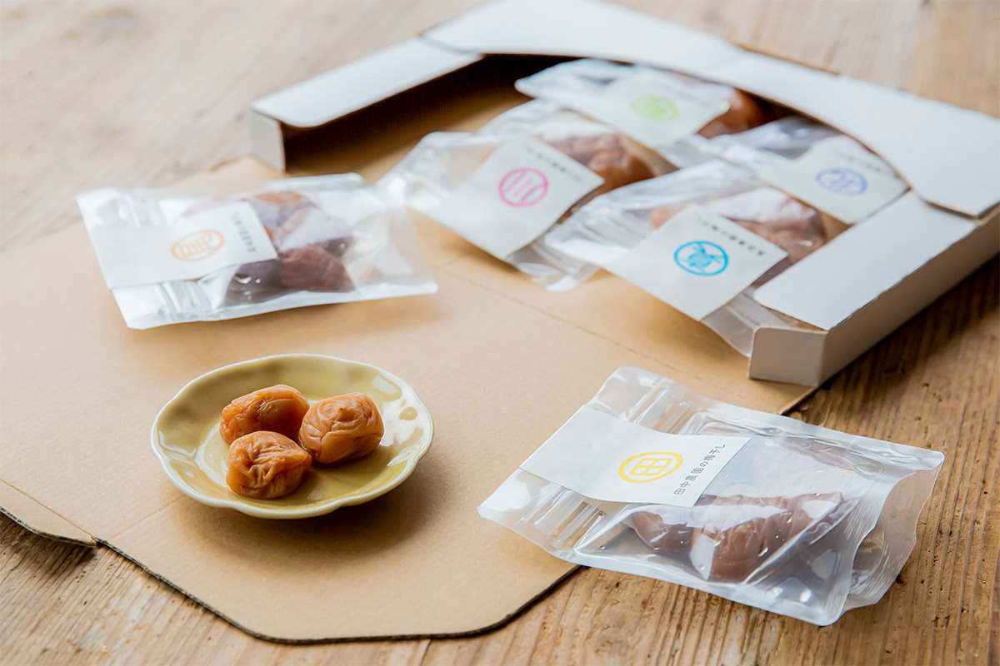
«Умэкурабэ» значит «сравнение слив». В набор входят умэбоси шести хозяйств, и у каждого свой подход к выращиванию. Сливы всех ферм засолены одинаково, только с солью, и упакованы отдельно. Попробуешь подряд и убедишься, что все они разные: одну хочется есть с белым рисом, в другой хочется распробовать сладость, спрятанную за кислотой.
Сравнивать здесь можно не только вкус, но и аромат. У одной сливы он фруктовый и сразу раскрывается, у другой скромный и простой, напоминающий о детстве. Трудно поверить, что в них нет ничего, кроме сливы и соли.
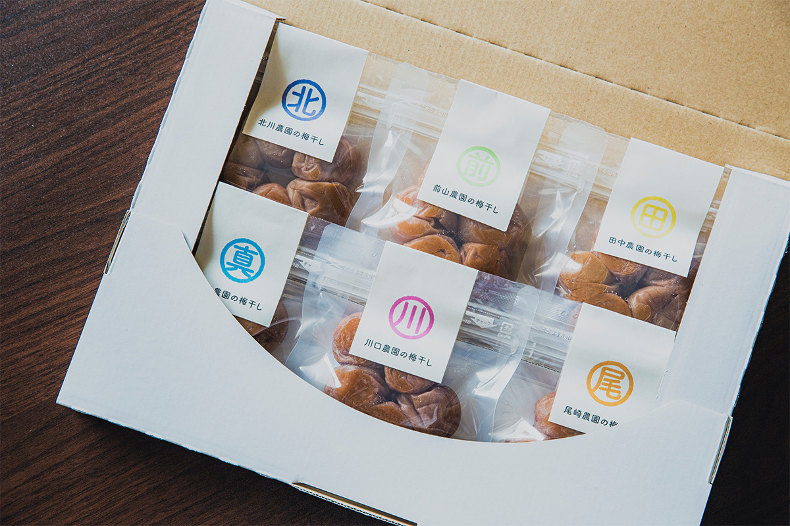
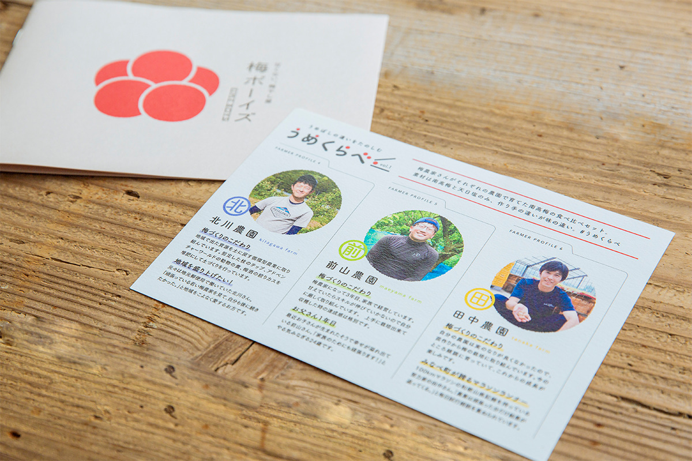
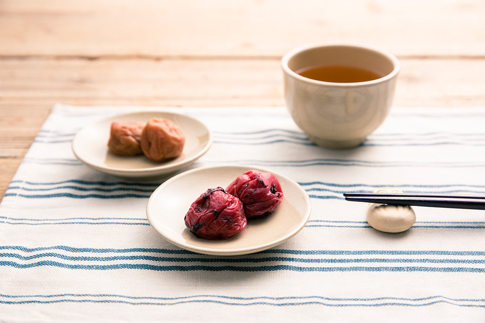
В умэбоси «Умэ Бойз» под кислотой собраны вкус самой сливы и всё, что в ней полезного. И, как ни крути, лучше всего они с миской горячего белого риса.
«Умэ Бойз» (компания «Умэхикари»)
- Адрес
- префектура Вакаяма, уезд Хидака, Минабэ, Осинэ, 505-1
- Телефон
- +81 739-74-8020
- Цены / Вход
- «Умэ то сио» и «Умэ то сисо» 280 г 1080 иен, 1 кг 3480 иен; «Кирэ» 1 кг 3280 иен; «Умэкурабэ» 3480 иен с доставкой (с налогом)
- Сайт
- umenokuni.com